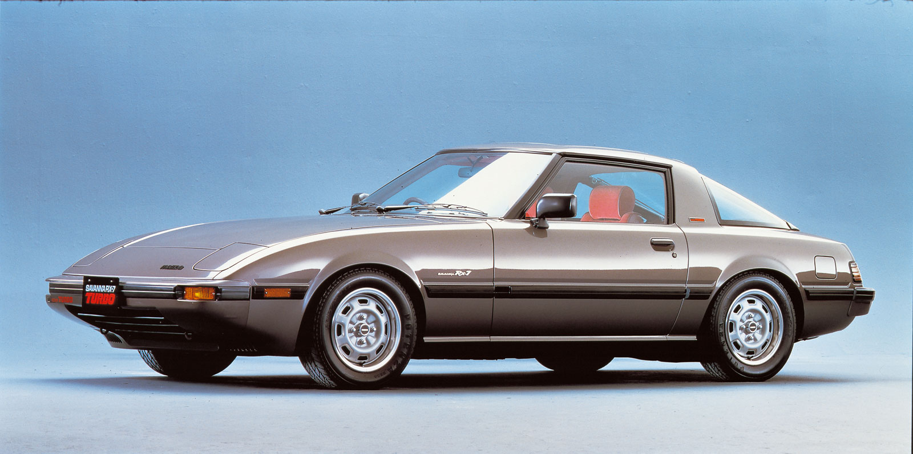
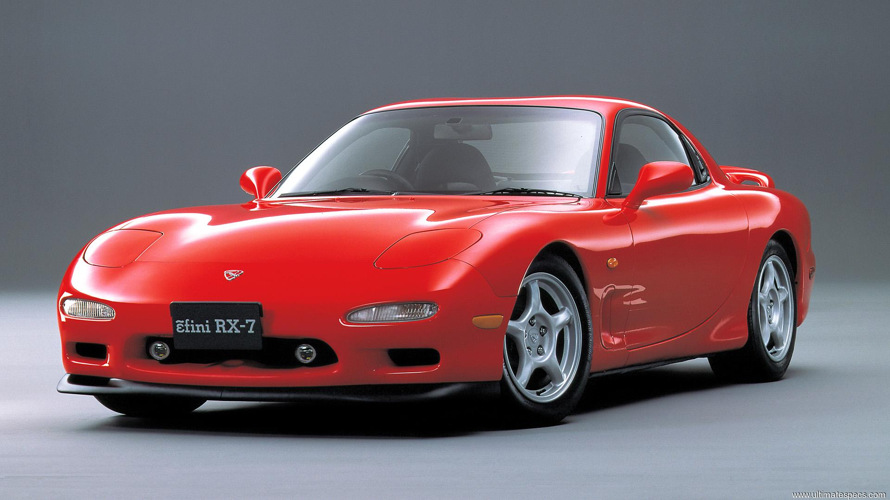

General Info
The Mazda RX-7 is a front-engine, rear-wheel-drive, rotary engine-powered sports car that was manufactured and marketed by Mazda from 1978 until 2002 across three generations, all of which made use of a compact, lightweight Wankel rotary engine.
RX-7 stands for Rotary eXperiment 7.
The first generation of the RX-7, SA (early) and FB (late), was a two-seater 2 door hatchback coupé. It featured a 12A carbureted rotary engine as well as the option for a 13B with electronic fuel injection in later years.
The second generation of RX-7, known as the FC, was offered as a 2-seater coupé with a 2+2 option available in some markets, as well as in a convertible bodystyle. This was powered by the 13B rotary engine, offered in naturally aspirated or turbocharged forms.

The third generation of the RX-7, known as the FD, was offered a 2+2-seater coupé with a limited run of a 2-seater option. This featured a sequentially turbocharged 13B REW engine.
The RX-7 made Car and Driver magazine's Ten Best list five times. More than 800,000 were manufactured over its lifetime.